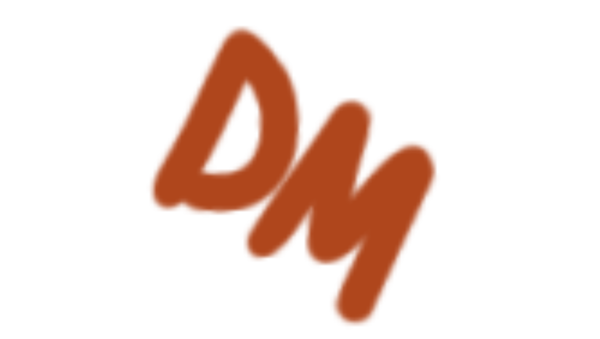
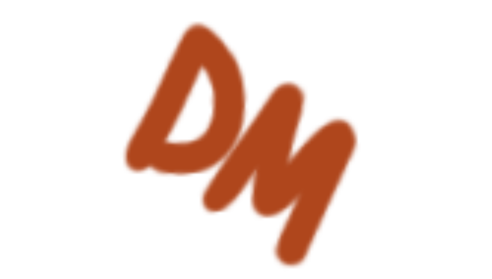

График показывает рост доли расходов в НИОКР с 3% до 3.2% в период с 2017 по 2019 год, после чего это значение сохраняется и в 2020 году.
В 2021 году и по 2022 год доля расходов в НИОКР доходит до 3.3%, а в с 2023 по 2024 доходит до 3.4%.
В 2025 доля расхода в НИОКР составляет 3.5% от ВВП.
Такое частое увеличение доли расходов на НИОКР показывает интерес государства к развитию разработок и исследований.
Интересный факт:
Германия развивает микроэлектронику за счёт целевых инвестиций в НИОКР и производственные мощности, ориентированные на автомобильную и промышленную электронику. Концентрация финансирования в специализированных кластерах обеспечивает устойчивый переход от исследований к серийному выпуску чипов.
 
